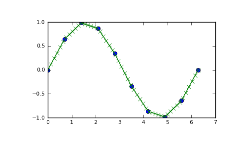

numpy.interp¶
- numpy.interp(x, xp, fp, left=None, right=None)¶
One-dimensional linear interpolation.
Returns the one-dimensional piecewise linear interpolant to a function with given values at discrete data-points.
Parameters : x : array_like
The x-coordinates of the interpolated values.
xp : 1-D sequence of floats
The x-coordinates of the data points, must be increasing.
fp : 1-D sequence of floats
The y-coordinates of the data points, same length as xp.
left : float, optional
Value to return for x < xp[0], default is fp[0].
right : float, optional
Value to return for x > xp[-1], defaults is fp[-1].
Returns : y : {float, ndarray}
The interpolated values, same shape as x.
Raises : ValueError :
If xp and fp have different length
Notes
Does not check that the x-coordinate sequence xp is increasing. If xp is not increasing, the results are nonsense. A simple check for increasingness is:
np.all(np.diff(xp) > 0)
Examples
>>> xp = [1, 2, 3] >>> fp = [3, 2, 0] >>> np.interp(2.5, xp, fp) 1.0 >>> np.interp([0, 1, 1.5, 2.72, 3.14], xp, fp) array([ 3. , 3. , 2.5 , 0.56, 0. ]) >>> UNDEF = -99.0 >>> np.interp(3.14, xp, fp, right=UNDEF) -99.0
Plot an interpolant to the sine function:
>>> x = np.linspace(0, 2*np.pi, 10) >>> y = np.sin(x) >>> xvals = np.linspace(0, 2*np.pi, 50) >>> yinterp = np.interp(xvals, x, y) >>> import matplotlib.pyplot as plt >>> plt.plot(x, y, 'o') [<matplotlib.lines.Line2D object at 0x...>] >>> plt.plot(xvals, yinterp, '-x') [<matplotlib.lines.Line2D object at 0x...>] >>> plt.show()
(Source code, png, pdf)


{kind=link}